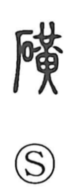

鉱

Uncategorized
Kun: aragane | On: kou
ore ・ mineral ・ mine
Explanation
This is a phono-semantic character. Its older form was 鑛, with the metal radical indicating the field of metals and minerals, while 廣 functions as the phonetic that gives the on reading ko and originally depicted a spacious hall. The Shuowen records the variant 礦 with the stone radical, and the component 黄 evokes the yellowish hue characteristic of raw ore. Although no oracle-bone or bronze forms are known, the pattern seen in 磺—stone combined with yellow—likely preserves the earliest idea: aragane, unprocessed ore and mineral stone. Places where such ore-bearing stones were gathered were treated as sacred precincts, tightly bound by taboo and guarded through ritual imprecation.